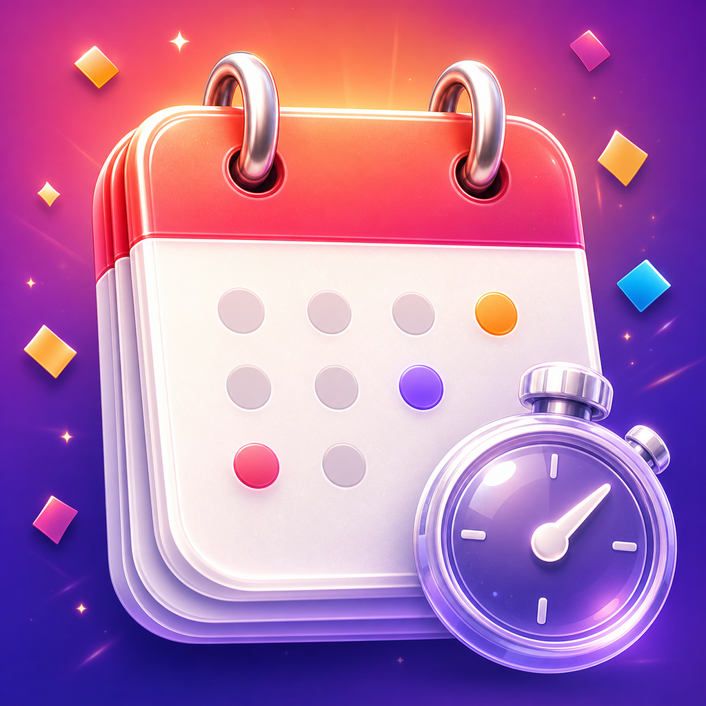
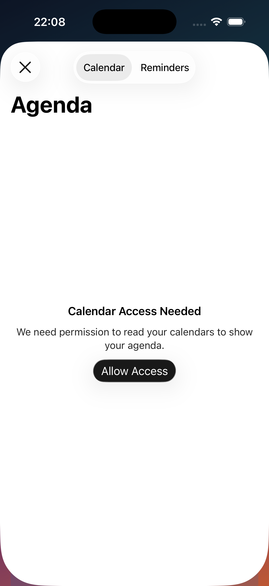
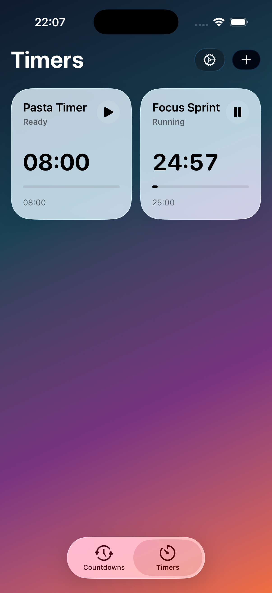

App Store review in progressCountdowns & Timers
for the dates that matter.
Keep birthdays, anniversaries, trips, launches, exams, deadlines, and everyday routines visible in one place. Countdowns & Timers combines elegant date cards, clear timers, calendar and reminders import, local alerts, widgets, and Live Activities without turning the app into clutter.
A calmer way to see what is next.
The core view is built around large, legible cards that make it easy to scan the next birthday, flight, launch, holiday, appointment, or exam. Search and filters keep the list useful when you track work dates, family events, and personal milestones together.
- Readable date formatting with event-focused card layouts.
- Color, gradient, and emoji styling so important entries stand out instantly.
- Filters for birthdays, travel, work, holidays, reminders, and your own categories.

Turn the plans you already have into living countdowns.
Instead of retyping dates, you can pull upcoming items from Calendar and Reminders, review them by date, and import only the ones you want. The app asks for access only when you trigger import, and the selection flow is designed to stay lightweight.
- Reads upcoming events and reminders only after you grant access.
- Groups results by date so large schedules do not become a flat wall of rows.
- Handles denied permissions with clear Settings recovery paths.

Timers that stay visible and finish with real presence.
Workout intervals, kitchen timers, routine blocks, and focus sessions are treated as first-class objects in the app, not as a hidden extra. When a timer is running, it can stay on the Lock Screen and Dynamic Island, then use local notifications and AlarmKit-powered alarm behavior when it ends.
- Start timers directly in the app with clean, high-contrast controls.
- Surface active progress on modern iPhone system surfaces through Live Activities.
- Use local alerts and completion sounds when a timer is over.
Built for the moments that stay on your Home Screen, not just inside the app.
Widgets keep the nearest dates visible, while the design system stays consistent across countdown cards, timer screens, and settings. The app aims for an iOS-native feel without sacrificing density or speed.
This site is the public support hub for Countdowns & Timers.
The App Store release is currently in review. Privacy and terms pages are already live, and support requests can go through the contact link below.